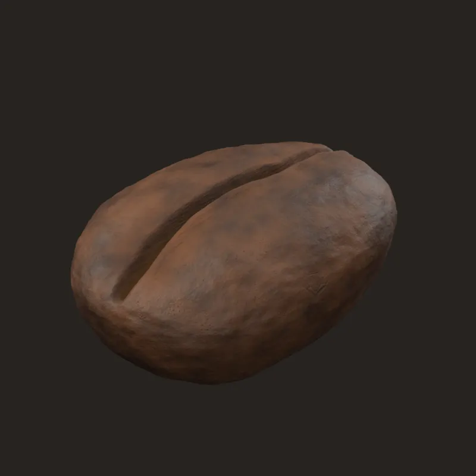

Tueste claro
Etiopía Yirgacheffe
Floral y cítrico, con final a té negro. Ideal en V60.
$ 9.800 · 250 gTostamos lotes chicos dos veces por semana y los servimos en la barra, filtrados o para llevar.
Cómo llegarTostamos lotes chicos dos veces por semana y los servimos en la barra, filtrados o para llevar.
Cómo llegarAlba es una tostaduría de barrio con barra de seis banquetas. Compramos directo a productores, tostamos poco y seguido, y te contamos de dónde viene cada taza.
Blend Alba de Brasil y Colombia: dulce, redondo y con crema persistente. Solo, cortado o con leche texturizada.
V60, Chemex y Aeropress con el origen de la semana. En la pizarra, la finca, la altura y el proceso.
Dieciocho horas de extracción en frío. Lo servimos solo, con tónica o con leche.
Medialunas de manteca, budines y cookies que horneamos cada mañana para acompañar.
Espresso, latte art y métodos filtrados en grupos de seis. Reservá en la barra o por correo.
Ver horariosFloral y cítrico, con final a té negro. Ideal en V60.
$ 9.800 · 250 g
Panela, durazno y una acidez amable. Funciona en todo.
$ 8.900 · 250 g
Chocolate amargo y nuez. Cuerpo para el cortado de todos los días.
$ 7.600 · 250 g
El de la barra: dulce, redondo y con crema persistente.
$ 8.200 · 250 gSeis banquetas, dos mesas largas y la tostadora funcionando a la vista.
hola@alba.example
+54 11 0000-0000
Talleres y pedidos de 1 kg o más, con reserva.